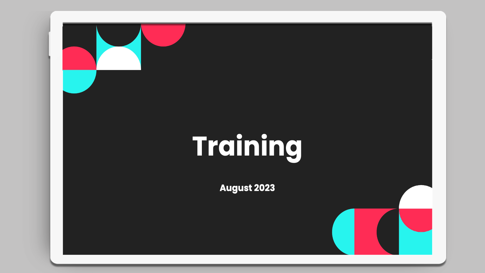

Context
Moderators needed focused guidance that connected recurring errors to policy expectations and good practice. The resource supported live explanation, interaction, and ongoing updates.

Supporting method 04 · Live delivery
Presentation materials designed to help facilitators deliver clear explanations, guided discussion, practice activities, and a consistent live learning experience.
Two original public covers · no facilitation-quality or learner-performance claim
Instructor led training materials
These presentation resources were created to support instructor led delivery through structured explanation, guided discussion, practice, and consistent facilitation.


Project framing
Moderators needed focused guidance that connected recurring errors to policy expectations and good practice. The resource supported live explanation, interaction, and ongoing updates.
I organised targeted information, guidance for common errors, interactive elements, and good practice support into a structured facilitator resource designed for iterative use.
The two original public covers document instructor led training deck work. They show the presentation format and delivery focus; no public measure of facilitation quality or learner performance is attached to either sample.
Learning ecosystem
The deliverable is one part of a performance system. The surrounding analysis, support, and evidence make it useful beyond a single learning moment.
Review errors, audience experience, policy changes, and the decisions a live session must strengthen.
Use examples, prompts, discussion, and feedback so participants actively process the guidance.
Provide reusable references, collect facilitator insight, and update the resource as needs change.